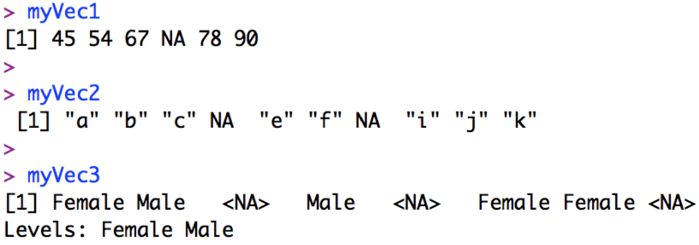

mean(ChlData$Chl)[1] NAMissing values are important and interesting, and they can affect how functions can be used on your data.
Note that R uses NA (i.e. ‘not available’) to indicate missing values of any class (numeric, character, factor):

R will also use NaN (i.e. “Not a Number”) for missing numerics, and NULL when results of a function are undefined. We can also tell R what we want to consider a missing number (e.g. in some databases 9999 is used to represent a missing value) with the na.strings=... argument when we read in the data.
We can apply functions to objects or their components when missing values are present by letting R know what we want to do with the missing values. For example, getting the overall mean of the chlorophyll column without telling R how to handle missing values:
vs. telling R to remove them with the na.rm = ... argument:
Note that the data frame itself remains unchanged, but R ignores the NAs when calculating the mean. We can find out more about how a particular function handles missing values by looking at the function’s help file (e.g. ?mean).
We can also find missing values using the is.na() function:
[1] FALSE FALSE FALSE FALSE TRUE FALSE FALSE TRUE TRUE FALSE FALSE FALSE
[13] FALSE FALSE FALSE FALSE FALSE FALSE FALSEand identify locations of missing values with:
Finally, we can remove all rows that are incomplete (i.e. containing any missing values) with the na.omit() function:
Station Year Month Chl
1 HL2 2007 2 16.07
2 S27 2005 10 31.31
3 HL2 2002 NA 40.38
4 HL2 2001 2 32.00
5 HL2 2001 10 NA
6 S27 2007 10 29.71 Station Year Month Chl
1 HL2 2007 2 16.07
2 S27 2005 10 31.31
4 HL2 2001 2 32.00
6 S27 2007 10 29.71
7 S27 2006 7 59.20
10 HL2 2003 5 26.00Note that above I reassign the output of the na.omit() function back to the name ChlData. This replaces the original data frame with the new data frame without missing values. I could also save it as a new object (with a new name) so the original is not overwritten.
Take a look at the numbers that print out to the left of the data frame:
Station Year Month Chl
1 HL2 2007 2 16.07
2 S27 2005 10 31.31
4 HL2 2001 2 32.00
6 S27 2007 10 29.71
7 S27 2006 7 59.20
10 HL2 2003 5 26.00These are row names that were assigned when the data were read in. We can ignore row names but I wanted to to explain them as they can be distracting when one starts manipulating data frames. Unless we specify otherwise, rows are named by their original position when the data are read in to R, e.g. initially row #3 was assigned the name “3”, and row #4 was assigned the name “4”, etc. Since we’ve removed some rows with na.omit() above, the row names now skip from e.g. 2 to 4 (row 3 has been removed), but note that the 3rd row in the data frame can still be accessed with:
You can choose your own row names with the rownames() function (or column names with the colnames() function) as well as with arguments in e.g. read.csv().